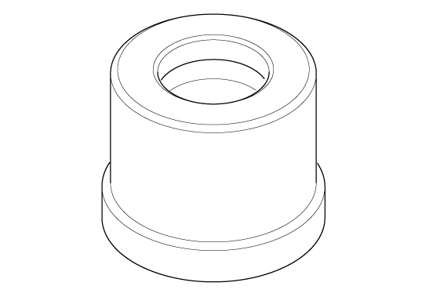

LEMON Manuals
: Even more car manuals for everyone: 1960-2025
Home
>>
Honda
>>
2016
>>
Civic LX, 4D Sedan, Automatic CVT Trans
>>
Repair and Diagnosis
>>
Engine Mechanical
>>
Mechanical
>>
Engine Control / Engine Mechanical - Testing & Troubleshooting
>>
Removal, Installation And Inspection
>>
Crankshaft and CKP Pulse Plate Removal, Installation, and Inspection (K20C2)
>>
Notes
Crankshaft and CKP Pulse Plate Removal, Installation, and Inspection (K20C2): Notes
Special Tools Required
Image
Description/Tool Number
Courtesy of HONDA, U.S.A., INC.
Driver Handle, 15 x 135L 07749-0010000

Courtesy of HONDA, U.S.A., INC.
Attachment, 24 x 26 mm 07746-0010700